Disponibile per nuovi progetti freelance
Enrico Iorio
Full-Stack Developer
Creo siti web moderni, piattaforme digitali, bot e strumenti su misura. Porto disciplina, codice pulito e interfacce chiare dentro progetti concreti.
7Anni di esperienza
50Progetti completati
30Clienti soddisfatti
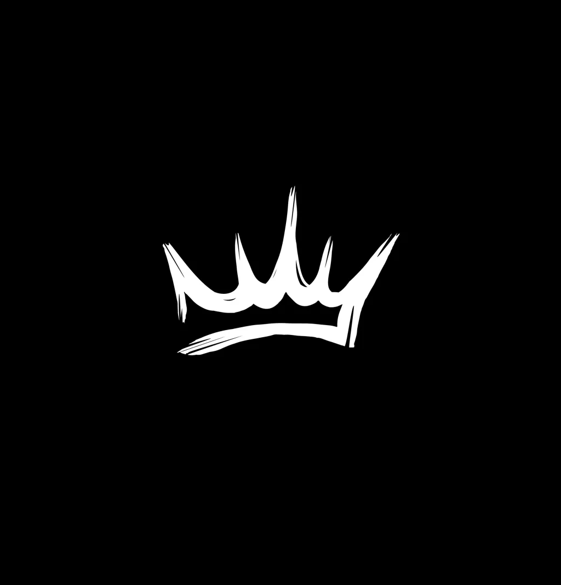
HTML CSS JS SQL
Roma, Italia
Web, server, community, automazioni.
CreateMeLiteRPDevora StudioImperialCraftLunarRPCloniXNewsITAMindMirrorPC MonitorSpot DucatiSpot Carlo Cracco
CreateMeLiteRPDevora StudioImperialCraftLunarRPCloniXNewsITAMindMirrorPC MonitorSpot DucatiSpot Carlo Cracco
Biografia
Dal primo sito ai progetti completi.
Sono Enrico Iorio, sviluppatore Full-Stack con sede a Roma. Ho iniziato con pagine statiche e sono arrivato a server di gioco, bot, dashboard, siti vetrina, landing commerciali e piattaforme su misura.
Lavoro come freelancer perche credo nel rapporto diretto con il cliente: preferisco costruire soluzioni accessibili, chiare e mantenibili, con supporto anche dopo la consegna.
Fuori dal codice pratico bodybuilding e kickboxing. Disciplina, pazienza e costanza non sono slogan: sono il modo in cui porto avanti anche i progetti.
- 01Su misura
Siti costruiti per ogni budget, non template riciclati.
- 02Codice pulito
Struttura chiara e facile da mantenere nel tempo.
- 03Supporto
Resto disponibile anche dopo la consegna.
Competenze
Stack pratico, non solo parole.
Le tecnologie che uso, divise per area, con quello che ci faccio davvero.
01
Frontend
Interfacce chiare, veloci e responsive.
- HTML & CSS
Layout responsive, semantica, SEO e animazioni.
- JavaScript
Interazioni, logica lato client e dati asincroni.
02
Backend e dati
Logica, database e automazioni.
- SQL / MySQL
Database relazionali, query e gestione dei dati.
- PHP
Backend per siti e pannelli web.
- Python
Script, automazioni e bot.
03
Gaming e community
Server di gioco, plugin e bot.
- Lua
Script per server GTA RP su FiveM.
- Java
Plugin custom per server Minecraft.
- Node.js
Bot Discord con comandi, moderazione e automazioni.
- C# / Unity
I primi giochi, dove ho imparato la logica di programmazione.
Startup · In sviluppo
MatchHub, la piattaforma per trovare le persone giuste.
Il progetto piu grande a cui sto lavorando in questo momento: una piattaforma di matching che unisce persone con competenze diverse - sviluppo, design, marketing, contenuti - per costruire team e portare avanti idee concrete.

In sviluppo attivo
- Concept
- Design
- Sviluppo
- Beta
- Lancio
La piattaforma non e ancora online: e in fase di sviluppo attivo. Vuoi seguirne l'evoluzione o dire la tua?
Scrivimi per saperne di piu →Esperienza
Una timeline fatta di community, clienti e piattaforme.
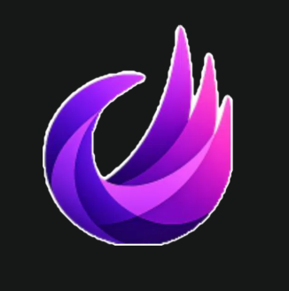
2026 - OggiDeveloper - CreateMe
Lavoro dentro CreateMe, azienda che crea siti web su commissione per clienti che vogliono una presenza digitale curata, moderna e personalizzata.
Web designHTML/CSSJavaScriptClienti
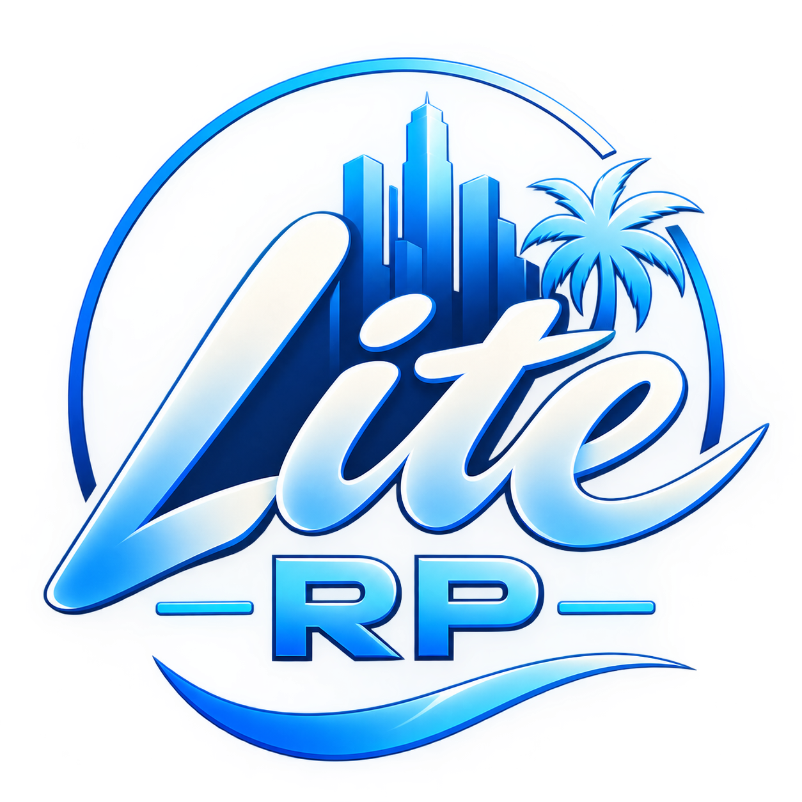
2026 - OggiDeveloper - LiteRP
Progetto che sto sviluppando oggi: un server GTA RP su FiveM costruito da zero, tra script Lua, database e sistemi di gioco pensati per la community.
LuaMySQLFiveM
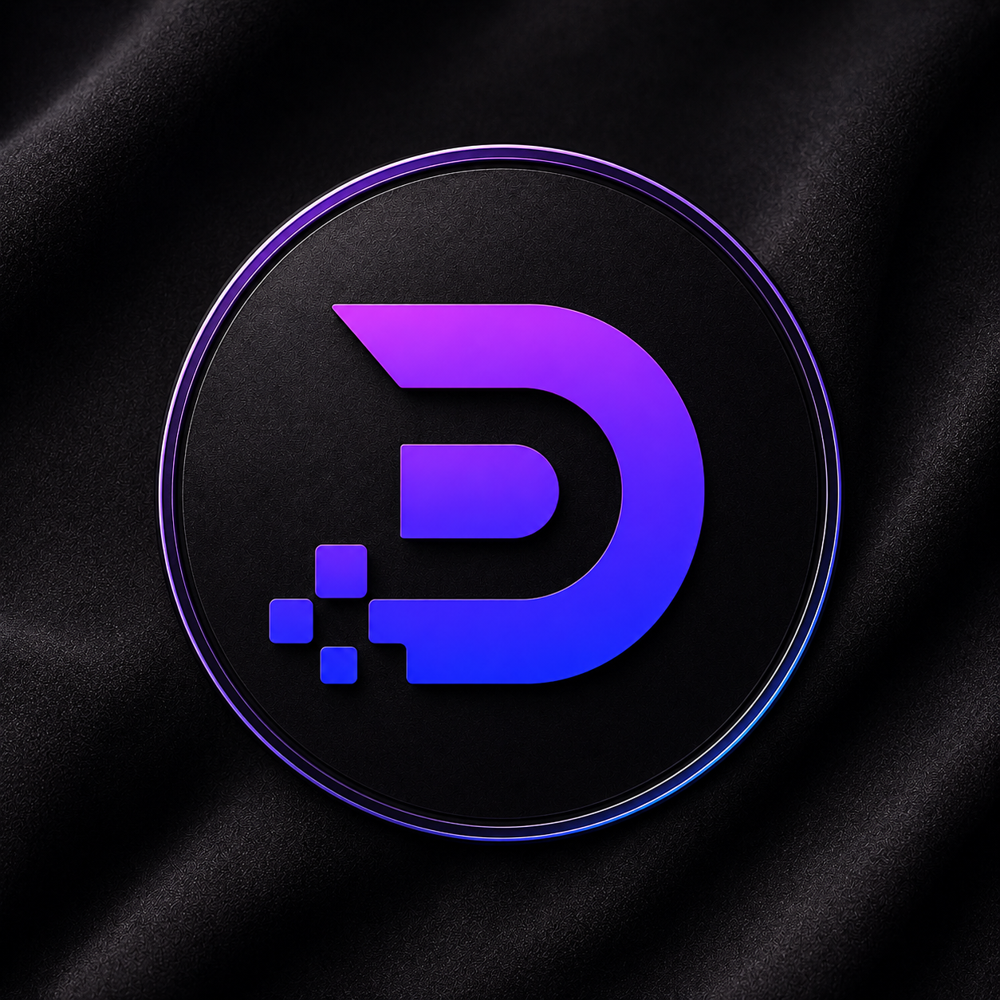
2026Founder - Devora Studio
Realizzazione di siti web e piattaforme digitali per persone e attivita che vogliono una presenza online moderna, chiara e accessibile.
HTML/CSSJavaScriptSQL
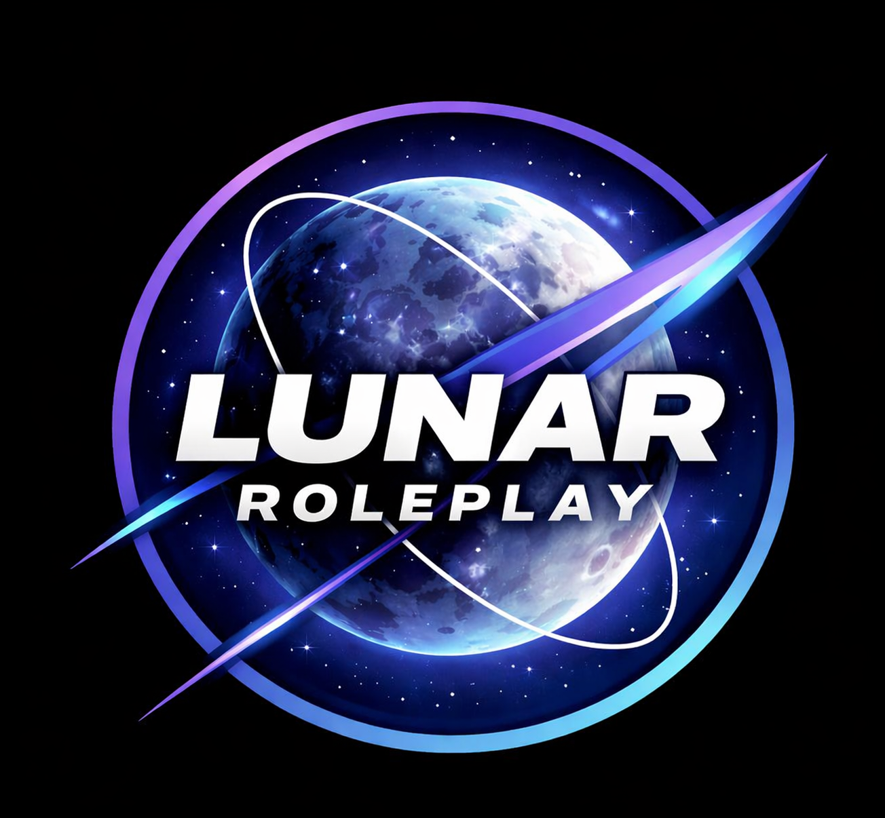
2025Developer - LunarRP
Sviluppo script in Lua, gestione database e ottimizzazione performance per un server GTA RP su FiveM.
LuaPHPMySQL
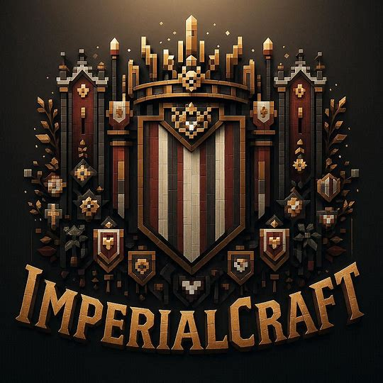
2019 - 2025Founder - ImperialCraft
Server Minecraft multimodalita con plugin custom in Java, bot Discord, sito integrato e community attiva.
JavaPythonNode.js
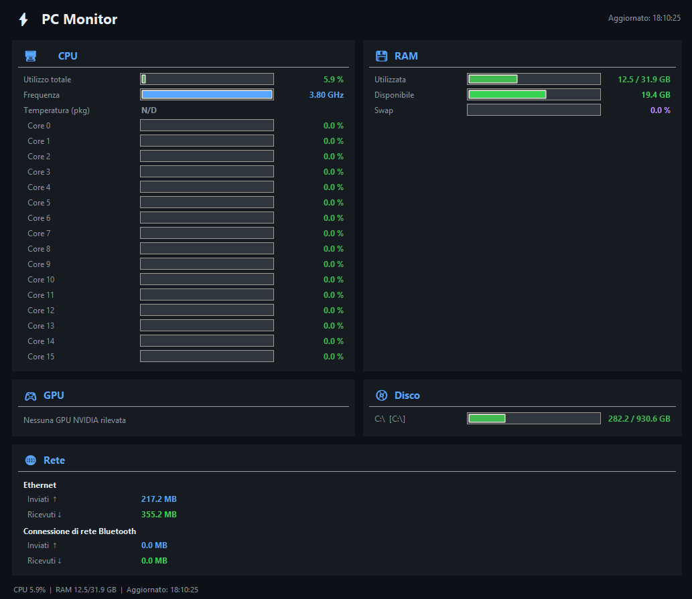
2018 - OggiWeb Developer Freelance
Siti web per attivita commerciali, ristoranti, server di gioco e professionisti: dal sito vetrina alle app piu complesse.
HTML/CSSJavaScriptPHP
Primi passi con Unity
Esperimenti con Unity 3D e C#, utili per imparare logica di programmazione e gestione di esperienze interattive.
C#Unity
Progetti
Cosa sto costruendo e cosa ho costruito.
Divisi in tre blocchi: i progetti su cui lavoro oggi, quelli principali gia realizzati e un archivio di lavori piu piccoli.
Adesso
Progetti attivi
Oggi
CreateMe
Azienda dove lavoro oggi: realizziamo siti web su commissione per clienti che vogliono un risultato moderno, chiaro e personalizzato.
Oggi
LiteRP
Il progetto che sto sviluppando ora: un server GTA RP costruito da zero, con script Lua, database e sistemi di gioco pensati per la community.
Progetti principali
6 progetti
Devora Studio
Studio per siti web e piattaforme digitali accessibili, moderne e costruite intorno alle esigenze del cliente.
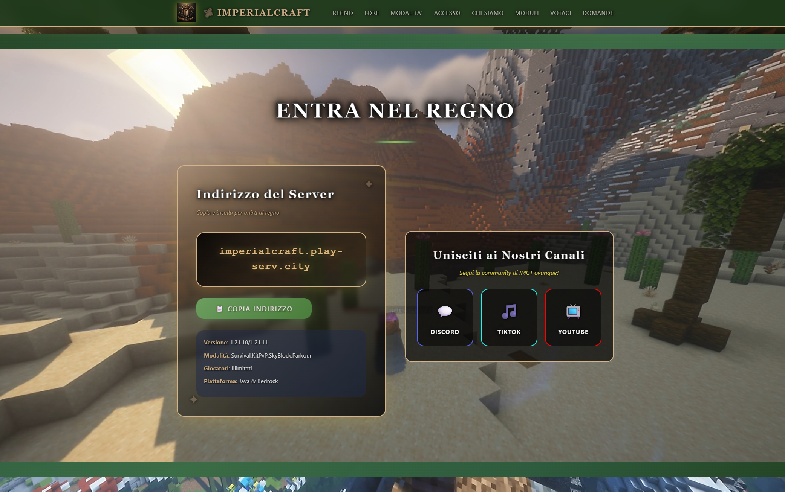
ImperialCraft
Server Minecraft multimodalita con community attiva, plugin custom, bot Discord e sito web integrato.
LunarRP
Script Lua, gestione database e supporto tecnico per un server GTA RP orientato alle performance.
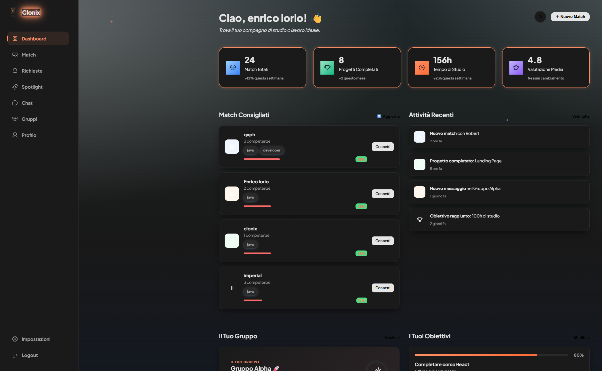
CloniX
Concept social per matching basato sugli interessi, utile per progettare flussi, dati e interfacce piu complesse.
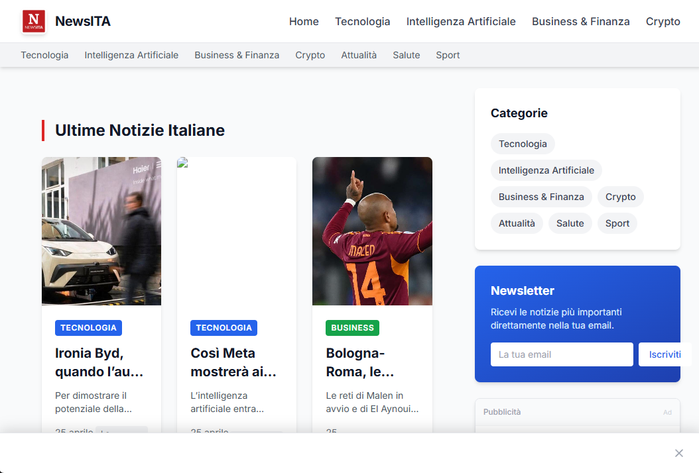
NewsITA
Aggregatore di notizie italiane con filtri, notifiche e interfaccia responsive per consultazione rapida.
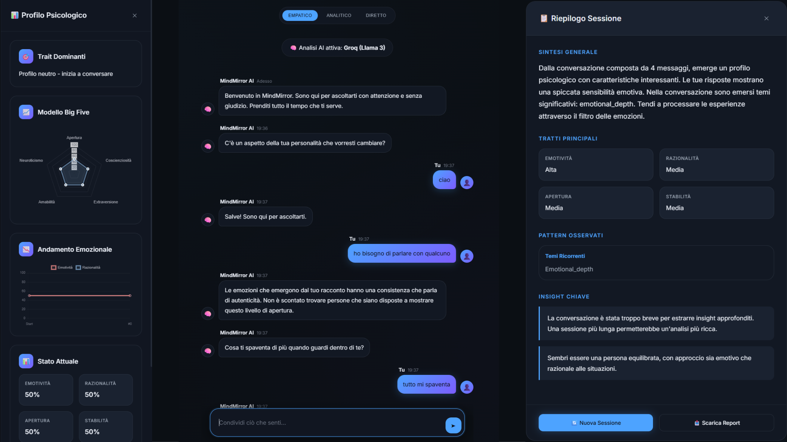
MindMirror
Esperienza che simula una seduta psicologica e organizza insight personali in una dashboard dedicata.
Altri lavori
Archivio
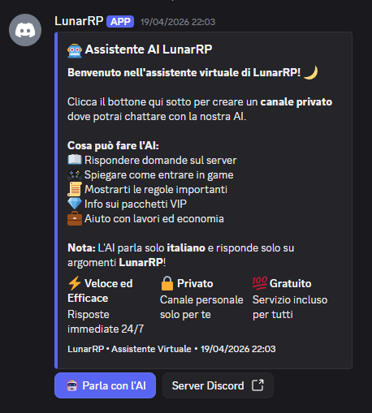
Bot Discord
Moderazione, comandi custom e automazioni per community.
- JavaScript
- Node.js
PC Monitor
App desktop per temperature e performance in tempo reale.
- Python
- JavaScript
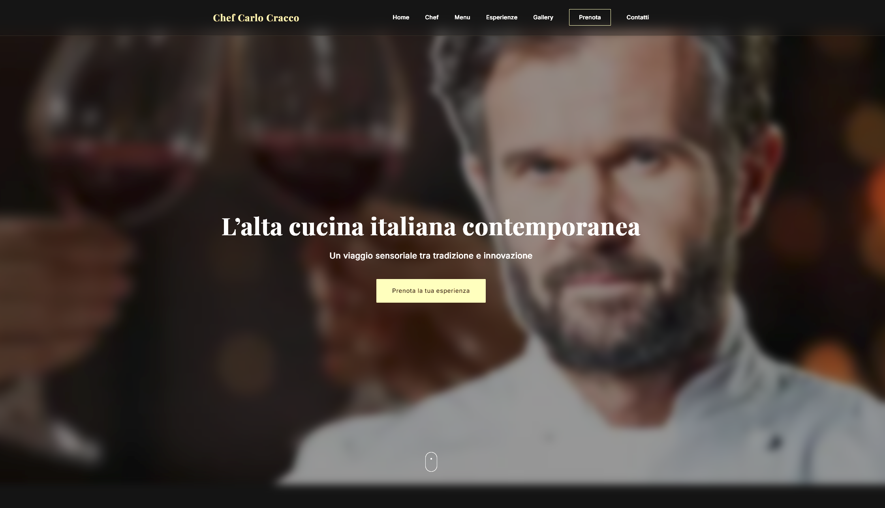
Spot Carlo Cracco
Pagina promozionale con focus visuale e comunicazione rapida.
- HTML/CSS
- JS
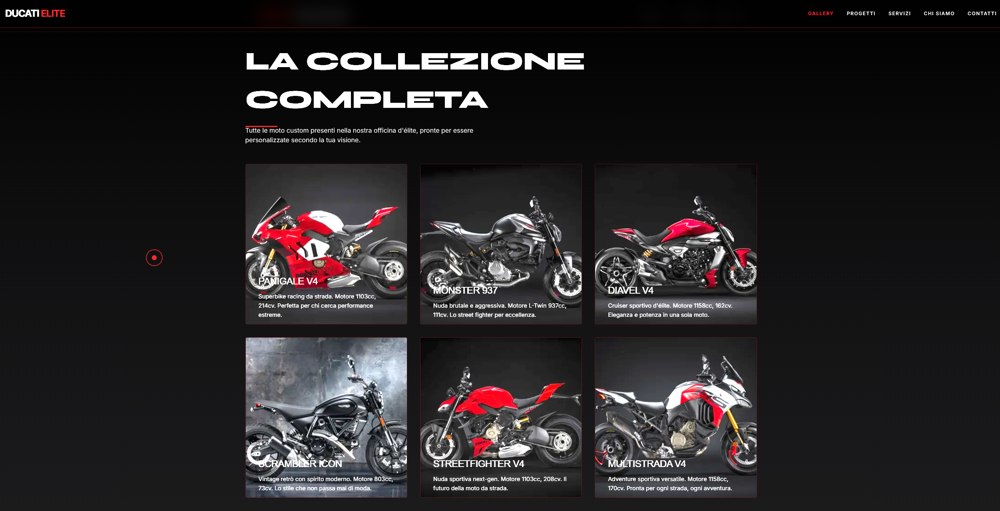
Spot Ducati
Esperienza pubblicitaria web con immagine protagonista e CTA.
- HTML/CSS
- JS
Contatti
Hai un progetto in mente?
Scrivimi e lo trasformiamo in una presenza online chiara, veloce e riconoscibile.
enryyyioriox@outlook.it →